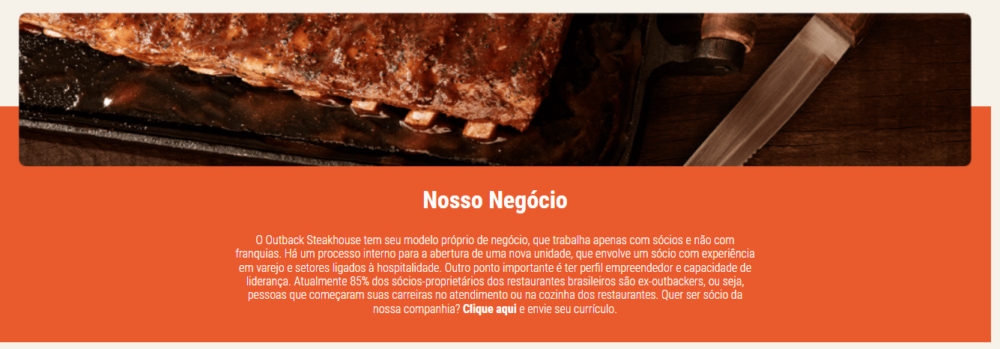

Sobre nós
O Outback Steakhouse possui 110 restaurantes no Brasil e está presente em 49 cidades, 16 estados brasileiros e no Distrito Federal.
Com cortes de carne especiais e aperitivos icônicos, o Outback caiu no gosto do brasileiro pela qualidade e sabor marcante da sua culinária, somados à descontração no atendimento e às instalações aconchegantes.
Inspirado na Austrália, o restaurante enfatiza vários aspectos da cultura australiana, como esporte, pontos turísticos, paisagens icônicas, tradições e lazer.
Além disso, oferecemos uma experiência única, divertida e de altíssimo padrão.
A rede Outback Steakhouse pertence ao grupo Bloomin’ Brands. No mundo, o Outback está em 23 países nas Américas, Ásia e Oceania.
O primeiro restaurante no Brasil foi inaugurado na Barra da Tijuca, no Rio de Janeiro, em 1997.

Quem somos
O Outback Steakhouse, caracterizado pela altíssima qualidade e sabor marcante de sua culinária é um restaurante com cortes de carnes especiais e aperitivos icônicos.
Inspirado na Austrália, o restaurante enfatiza vários aspectos da cultura australiana, oferecendo assim uma experiência única, divertida e de altíssimo padrão.
Possui 110 restaurantes no Brasil e está presente em 23 países nas Américas, Ásia e Oceania.
Chefes
Chefes e cozinheiros proativos com domínios em diversas áreas da gastronomia e mais de 5 anos de experiências no ramo. Com vastos conhecimentos teóricos e principalmente práticos.

 MEU PERFIL
MEU PERFIL